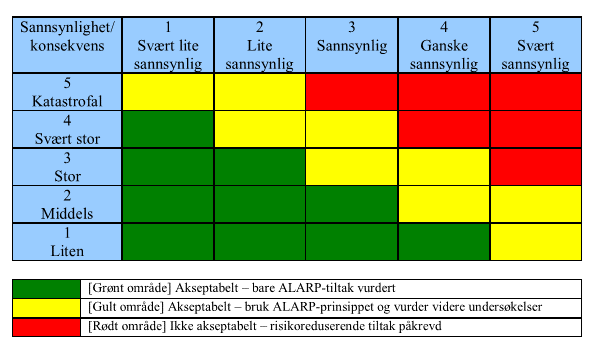

Hvordan redusere uønsket spredning av data
HVORDAN LAGE GODE PASSORD? Gode passord kan være forskjellen på et innbrudd og ikke, men hvordan kan man lage gode passord som er lette å huske? Her er noen tips. - Minst 12 tegn, helst ikke kortere enn 15. - Ikke bruk åpenbare ting (passord, password, 123456789, qwerty osv.) - Ingen personlig info som navn eller fødselsdato. - Varier tegnene; tall, store og små bokstaver, gjerne også ulike symboler som utropstegn og alfakrøll. - Prøv å unngå å bytte ut bokstaver med liknende tall og symboler (DRAGE og DR4G3 er like lette å knekke.) - Ikke ha bare ett ord som passord, men flere. - Lag en setning som er personlig for deg som du husker, og baser passordet ditt på det. Det anbefales også å sette opp to-faktors verifisering alle steder der det er mulig. Det betyr at du må ha passordet og for eksempel en engangskode for å kunne logge inn.
HVEM BEGÅR DATATYVERI? Mange av datatyveriene begås av ansatte eller andre som opprinnelig har lovlig tilgang til dataen. (Hentet frafrifagbevegelse) Derfor er det viktig med godt miljø slik at det er trygghet mellom ledelsen og ansatte.
HVEM KAN HJELPE? Det finnes også IKT-sikkerhetsselskaper som tilbyr råd og hjelp med alt relatert til å senke risikoen for spredning av data.
HVORDAN STOPPE?
Gjør en risikosjekk. Bruk et skjema som dette og vurder hvordan du ligger an. Skjemaet viser sammenhengen mellom sannsynlighet og konsekvens. Fargene sier noe om det er uakseptabelt, helt greit, eller så bra som man kan få det. Akkurat dette skjemaet foreslår å få ting «ALARP», som står for «As Low As Reasonably Possible» eller «så lavt som rimelig mulig.»
